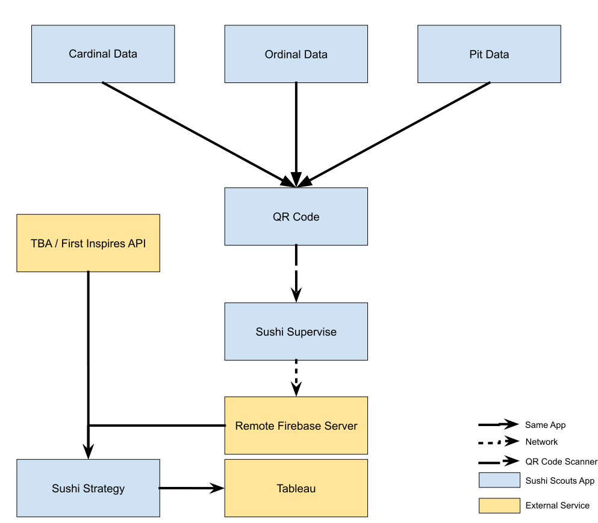

Scouting Overview
Overview of our previous system
During the 2022 season, our application supported quantitative match scouting and basic qualitative match scouting. We had a web application where scouts entered in quantitative information such as the amount of cargo scored. Scouts also included any qualitative observations in a notes section of the application. Our data was stored on an on-site server and was exported as a CSV file, which was then plugged into our Tableau configuration file to produce graphs and other data visualizations. This method worked well for getting quantitative data on teams, however, there were some flaws with our approach. The first issue, and the most drastic one, was the lack of pit scouting. In 2022 we only collected data on matches and not on robot design. The second flaw is that our old system did not account for driver experience or drive team synergy, which are relevant aspects for choosing a good alliance partner. The third issue was reliability. Especially with fast-paced matches scouts would struggle to keep up and were often tired towards the end of competitions. This led to inaccurate data, and people despising scouting. The fourth and final issue was the lack of adaptability, even though the app was designed with game adaptability in mind, it was still hard to adapt it to new games, and we knew that if we used it in 2023, we would have had to spend valuable time getting working for the new season. The solution we have now helps mitigate the above issues by adding multiple new types of scouting data, procedures, and analysis. It also improves our current form of scouting by improving reliability and implementing more quality-of-life features.
Types of Scouting
This paper will focus on 3 different forms of scouting: Cardinal Match Scouting, Ordinal Match Scouting, and Pit Scouting.
Cardinal Match Scouting: This method of scouting aims to get quantitative data on robot performance. For every match there are at least six scouts, each scouting a team in the match. Each scout enters data such as the amount of cargo scored in auto, whether a team plays defense, the type of climb, etc. This type of scouting is easy to teach and does not require significant technical knowledge.
Ordinal Scouting: This scouting technique aims to get data on teams as compared to their alliances in non-scoring attributes. It gets information on driving technique, defense ability, and any other attributes given by the strategy and drive teams. There are many ways to implement this method however this paper will focus on the method outlined by Team 1678 (Citrus Circuits).
Pit Scouting: This scouting technique is meant to provide data on teams’ robot design and behavior. It is intended to show a team’s theoretical ability at a competition and does not consider system failures in matches.
Overview of Current System:
The above image can be split into three major services. The first is data collection, which encompasses Cardinal Match Scouting, Ordinal Scouting, Pit Scouting, and data from The Blue Alliance (TBA) and First Inspires API’s. The second service is data storage which encompasses the Sushi Supervise application, and the remote database. The third service is data analysis which includes the Sushi Strategy, and Tableau.
Cardinal Match Scouting Cardinal Match Scouting is done through the Sushi Scouts App. During competitions, there are at least two scouts scouting a single team. This is so that we can take the average of two data points. Which is done so that we can increase data reliability.
Ordinal Scouting Our solution to ordinal scouting is heavily inspired by the super scout’s concept outlined in the Citrus Circuits white paper on their 2021 scouting solution. The system is as follows. For every match, there are four super scouts split into two pairs. All super scouts are specialized strategy members that have received extensive training. Each scouting pair is assigned an alliance. During the course of each match, these super scouts rank each team on their alliance with respect to other teams on the same alliance. Each team gets ranked from one to three on multiple metrics such as driver skill, intaking ability, and defense ability. At the end of the match, the members of both pairs confer and come to a final ranking for each team. As such we now know how each team on an alliance compares to its partners in certain metrics. This solution is also done in the Sushi Scouts application.
Pit Scouting Pit scouting is also done through the Sushi Scouts application. To get data from pit scouting, pit scouts have to return to the stands. Pit scouting collects information on a robot’s design, abilities, and auto paths. Pit scouts are preferably specialists in a certain subsystem. Pit scouts are sent out at the start of each day and when lead scouts see fit (Ex: a robot seems to majorly break in a match).
TBA/First Inspires API: This is the only data that will not be collected by scouts, this data will be pulled after matches by Sushi Supervise. This API will also be used to pull robot pictures, robot names, and robot rankings during an event.
Sushi Supervise / Data Collection: Data collection during competitions is done through the Sushi Supervise application. Data is sent from Scouters via QR codes. Our compression algorithm for match data allows around 50 matches to be stored in a single QR code (depending on the length of the notes section). However, we tend to advise scouts to generate a QR code for upload around every 10 matches to avoid a QR code overflow. Once a Lead Scout scans a QR code, that match data is transferred to their instance of the Sushi Supervise application, and from there they can flag, or delete matches as needed. Once possible lead scouts will upload data to a remote database so that strategy members can update their analytical models. The reason for the use of QR codes is the absence of data during competitions, in the future, there are plans to develop a system that relies on data as well so that scouts can switch between the two methods as needed.
Remote Server: The remote server stores all of the data that is uploaded from Sushi Supervise. Deleted, and flagged data is also stored, but is flagged as such. The logic behind storing deleted data is the belief that data should never be deleted, but instead should only be flagged, this is to reduce the possibility of any data loss. Any lead scout can flag or unflag data.
Sushi Stragey / Tableau: Sushi Strategy contains 3 overall features. The first feature is a set of team profiles for every team at an event. Each team profile displays robot information such as the type of drivetrain, and pictures of the robot, this information is taken from pit data. This is intended to give the strategy subteam an easy way to see a robot’s capabilities. The second feature is robot rankings based on the attributes collected from the ordinal scouting. For example, if we collect data on driver experience, the system will rank every team based on driver experience and display these rankings. The third is cardinal viewing. Cardinal viewing allows users to view match performance for teams, it also allows the export of cardinal data to CSV format. This exported file can be plugged into our Tableau configuration which then generates graphs and our visualizations of cardinal performance. The reason for the use of Tableau will be covered slightly more in-depth later on, however, simply the use of Tableau was to increase adaptability between games.
Sushi Scouts Application
All non-external components of our scouting system are encompassed in a single app called Sushi Scouts. That app is split into three sections, Sushi Scouts (contains Cardinal, Ordinal, and Pit Scouting), Sushi Supervise, and Sushi Strategy. The app is built with the flutter framework for its cross-platform support. Ideologies The following section covers the ideologies and beliefs we had in mind while designing the app. Some of these significantly influenced how the app is designed, and these ideas are what separate us from other implementations of FRC Scouting.
Adaptability: Sushi Scouts should be able to be adapted to a new game by anybody in a short amount of time. Adaptability in Sushi Scouts is achieved through a JSON config file. On startup, the app reads a config file, which defines what data is collected during scouting, and how it is laid out in the app. Every part of the app including Sushi Strategy, and Sushi Supervise dynamically adapts to the config file. This allows us to adapt to any new game in less than an hour. This is why Tablue is used for cardinal analysis. We simply did not believe that we could make data viewing adaptable this year, so as such we decided to outsource to Tablue.
Openness: Sushi Scouts should be easily available to any team that wants to use it; the more people that use the app the more beneficial it is for everybody. Scouting data becomes incredible when more data points are added. As such we have made it a priority for it to be easy for other teams to use our application. Any team can use Sushi Scouts, and the intuitive UI allows for little training time. We currently have two teams using our application in our district, and this has led to an increase in data accuracy.
Imagery: Sushi Scouts should be designed with imagery in mind; the app should look aesthetically pleasing and should try to maintain brand standards. Imagery is a major part of Sushi Squads’ identity. We strive to maintain a high level of imagery in everything we do, and that includes our applications. As such Sushi Scouts needed to have an aesthetically pleasing interface, that met the standards of Sushi Squad.
Combined all three of these ideologies make Sushi Scouts a unique application. Combining all three is incredibly difficult, and has resulted in a lot of work to make sure that all three were adequately met.
Future Plans
While the current state of the application is usable, there is still a lot of work for improvement.
Quality of Life: There are many quality-of-life features that are constantly being added to the app. These are features such as a QR code progress bar, or increasing the quality of the code in the app. These features, although minor, make Sushi Scouts a lot more open to outside teams, and are a major priority during the 2023 season.
Config Files: The original plan for config files was that any team could create a config file, and download it on their scout’s phones. However, efforts for this fell through due to time constraints. In the offseason, we are planning on introducing this feature back, as this allows the app to be more open to teams who don’t want to follow our config file.
Automated Pick List: The initial goal of the Sushi Scouts application was to be able to generate an automated pick list based on a set of weighted attributes. The initial idea for this is outlined in the initial 2022 off-season scouting whitepaper. However, just like the config file, efforts fell through due to time constraints. We are hoping to create a score prediction algorithm during the 2023 season, that we will expand in the offseason into an automated pick list algorithm.
Tableau Replacement: The goal for future seasons is to slowly phase out tableau, we find that it introduces a lot of barriers for outside teams, and we would like as many features as possible to be encompassed in the Sushi Scouts application. As such the goal is to be able to slowly phase out tableau by adding visualizations to the application.
UI: There are efforts to improve some aspects of the UI, while most of it will remain the same a couple of screens will be redesigned, and some headers and footers will also be redesigned.